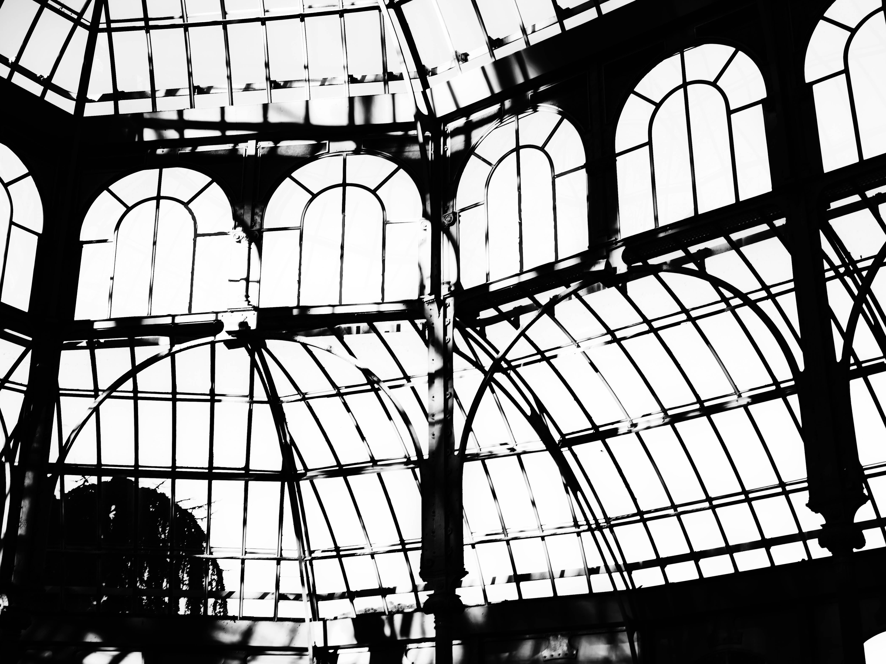
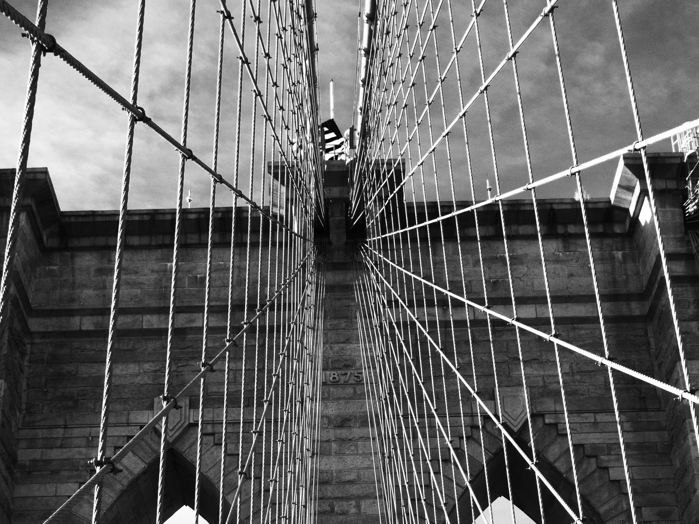
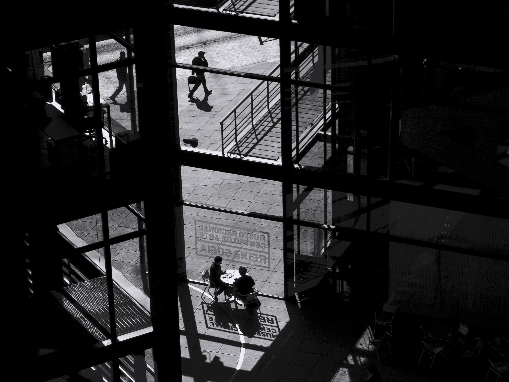
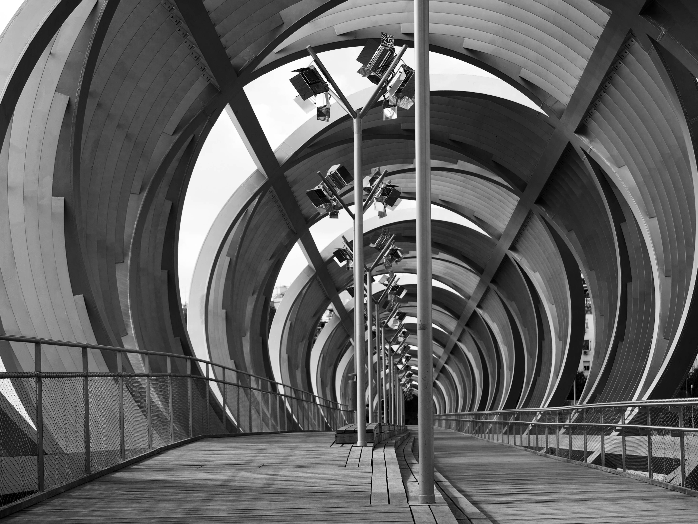
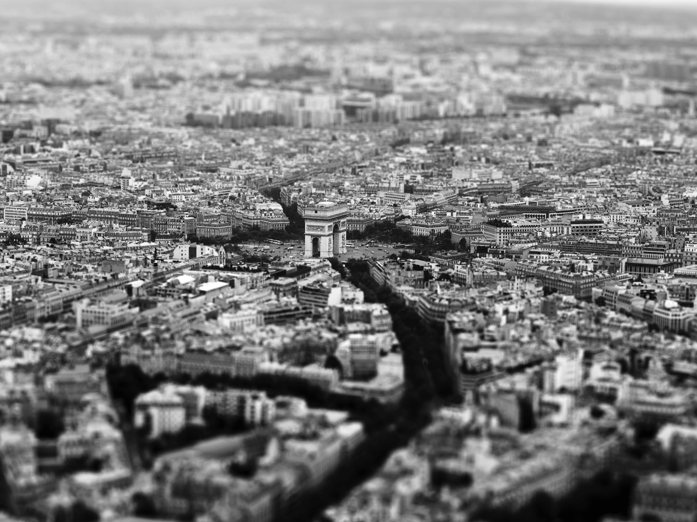

Guillermo Vera
These are just a few examples of pictures. Although it may not seem like it, landscapes are not my favorites but I don't like mixing photos of different types, it produces a rare effect on the viewer. The same goes for mixing black and white photos with color ones.




